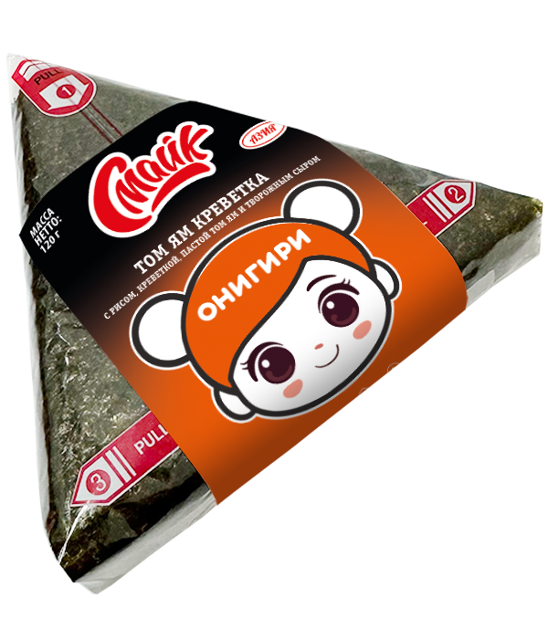

Онигири том ям креветка

Состав:
рис, креветка, паста том ям, творожный сыр, нори.
Масса нетто:
120 г.
Пищевая и энергетическая ценность в 100 г продукта (средние значения):
Белки
– 4,8 г.
Жиры
– 7,1 г.
Углеводы
– 30,9 г.
Калорийность
– 206 ккал / 867 кДж.
Закрыть окно